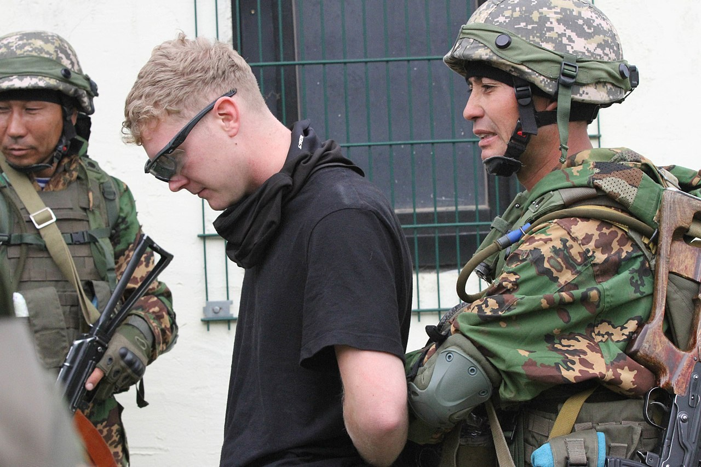

Тактикалық дайындық Drill & Tactical Строевая и тактическая подготовка
Жер бедері мен оттың қарқынына қарай жылжу тәсілдерін таңдау. Choosing movement methods according to terrain and enemy fire. Выбор способов передвижения по местности и огню противника.

Ұрыс даласында жылжу — қарсыластың оты мен бақылауы жағдайында жасырындық пен тіршілікке қабілеттілікті сақтай отырып орын ауыстыру. Мақсаты — белгіленген межеге шығынсыз жетіп, атысқа қолайлы орынды иелену. Movement on the battlefield means changing position under enemy fire and observation while preserving concealment and survivability. The aim is to reach the assigned line without losses and to occupy a position suitable for firing. Передвижение на поле боя — перемещение под огнём и наблюдением противника с сохранением скрытности и живучести. Цель — выйти на назначенный рубеж без потерь и занять выгодную для стрельбы позицию.
Тәсіл үш факторға қарай таңдалады: жер бедері (укрытиелердің биіктігі мен жиілігі), оттың қарқыны және міндет пен қашықтық. От күшейген сайын жауынгер биіктікті азайтады: жүгіруден → қарғуға → еңбектеуге көшеді. The method is chosen by three factors: terrain (the height and frequency of cover), intensity of fire, and the mission and distance. As fire increases, the soldier lowers his profile: from running → to rushes → to crawling. Способ выбирают по трём факторам: местность (высота и частота укрытий), сила огня и задача с дистанцией. С усилением огня боец снижает силуэт: от бега → к перебежкам → к переползанию.
Жеделдетілген қадам / жүгіруQuick step / runУскоренный шаг / бег
Оттан тыс, ең жылдам тәсілOut of fire — the fastest methodВне огня — самый быстрый способ
Қарғу (перебежка)RushПеребежка
Ашық жерде, от астында қысқа қозғалысShort bound across open ground under fireКороткий бросок по открытому месту под огнём
ЕңбектеуCrawlingПереползание
Ең аласа силуэт, қатты от пен бақылау кезіндеLowest profile — under heavy fire and observationСамый низкий силуэт — при сильном огне и наблюдении
| ТәсілMethodСпособ | Қашан қолданадыWhen it is usedКогда применяют | Силуэт пен жылдамдықProfile & speedСилуэт и скорость |
|---|---|---|
| Жеделдетілген қадам / жүгіруQuick step / runУскоренный шаг / бег | от тимейтін жерде немесе жасырын тұста жылдам жылжығандаout of fire or moving covertly to cover distance fastвне огня или при скрытном движении, чтобы быстро пройти участок | толық бой · ең жоғары жылдамдықfull height · highest speedполный рост · максимальная скорость |
| Перебежка (қарғу)RushПеребежка | от астында ашық жерде, укрытиеден укрытиегеunder fire on open ground, from cover to coverпод огнём на открытой местности, от укрытия к укрытию | еңкейген бой · жоғары жылдамдық, қысқа кезеңдерменcrouched · fast, in short boundsпригнувшись · быстро, короткими бросками |
| ЕңбектеуCrawlingПереползание | қатты от астында, жасырындық қажет әрі укрытиелер аласа болғандаunder heavy fire, when stealth is needed and cover is lowпод сильным огнём, когда нужна скрытность и укрытия низкие | жатқан күй · баяу, бірақ ең қорғалғанprone · slow but the most protectedлёжа · медленно, но наиболее защищённо |
Ереже: от неғұрлым күшті болса — қарғу соғұрлым қысқа. Қатты от астында бір қарғу 2–3 секундтан аспауы тиіс — қарсылас көздеп үлгермейтін уақыт. Rule: the heavier the fire, the shorter the rush. Under heavy fire one rush should not exceed 2–3 seconds — less than the time the enemy needs to aim. Правило: чем сильнее огонь — тем короче перебежка. Под сильным огнём одна перебежка не должна превышать 2–3 секунд — меньше, чем нужно противнику для прицеливания.
| ТүріTypeВид | ОрындалуыHow it is doneКак выполняется | Қашан қолданадыWhen it is usedКогда применяют |
|---|---|---|
| ПластуншаLow crawlПо-пластунски | денені жерге қатты тигізіп, басты көтермей жылжуbody pressed flat to the ground, head kept lowтело плотно прижато к земле, голова не поднимается | қатты от, ашық әрі тегіс жерheavy fire, open and flat groundсильный огонь, открытая и ровная местность |
| Жартылай тізерлепOn hands and kneesНа получетвереньках | тізе мен шынтаққа сүйеніп, силуэтті аласа ұстапon knees and forearms, keeping a low profileопираясь на колени и предплечья, удерживая низкий силуэт | от әлсіреген, аласа укрытиелер бар жерwhere fire is weaker and there is low coverогонь слабее, есть низкие укрытия |
| БүйірменOn the sideНа боку | бір қырынан жатып, бос қолмен жүкті сүйрепlying on one side, dragging a load with the free handлёжа на боку, свободной рукой подтягивая груз | жүк, оқ-дәрі немесе жаралыны тасығандаwhen moving a load, ammunition or a wounded manпри переносе груза, боеприпасов или раненого |
— Жер қатпарларының артына, воронкаларға, орлар мен арналарға, бұта-ағаш тасасына жасырын. Олар оқ пен бақылаудан да қорғайды.— Take cover behind folds of ground, in craters, ditches and channels, behind bushes and trees — they shield you from both fire and observation.— Укрывайся за складками местности, в воронках, канавах и руслах, за кустами и деревьями — они защищают и от огня, и от наблюдения.
— Ашық учаскеде кідірме: оны мүмкіндігінше тез әрі қысқа қарғумен өт.— Do not linger on an open stretch: cross it as fast and with as short a bound as possible.— Не задерживайся на открытом участке: преодолевай его как можно быстрее и более коротким броском.
— Бір маршрутпен бірнеше рет қозғалма және укрытиеге бұрынғы орынмен оралма — бағытты әр жолы өзгерт.— Do not move along the same route twice and do not return to cover by the old track — vary the direction each time.— Не двигайся дважды по одному маршруту и не возвращайся к укрытию прежним путём — каждый раз меняй направление.
— Күн мен жарықты ескер: қарсыласқа қарсы жарықта силуэт айқын көрінеді, көлеңкеде жасырыну оңай.— Account for sun and light: against the light your silhouette stands out, while shadow makes concealment easier.— Учитывай солнце и освещение: против света силуэт заметен, а в тени укрыться легче.